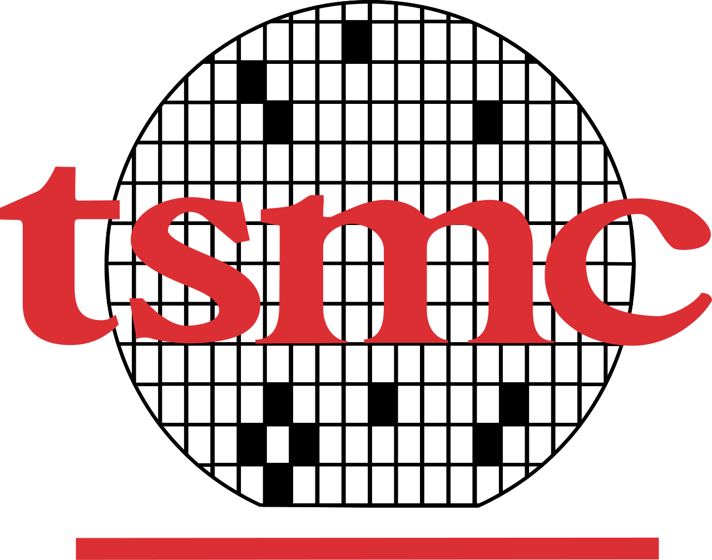
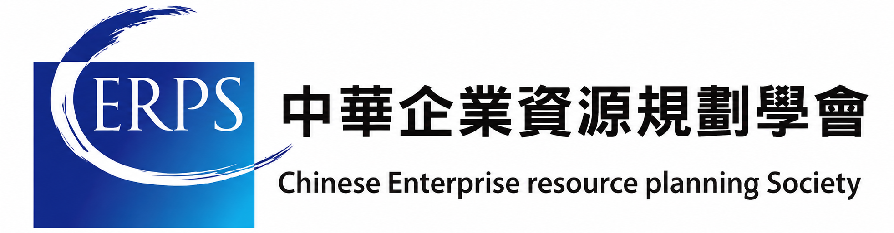
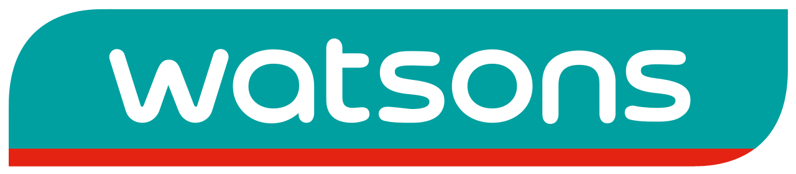
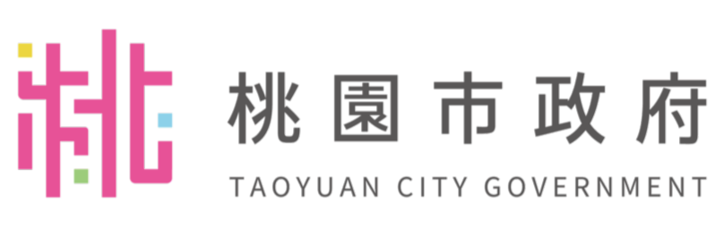

Present
National Taiwan University of Science and Technology
Master of Science in Information Management
Enterprise Systems | LLM Applications | AI Security
莊宸安
Motivation will almost always beat mere talent.
Professional Summary
I am a graduate student in Information Management at NTUST with hands-on experience in SAP ERP implementation, digital transformation, LLM-based applications, AI-enabled computer vision, and cybersecurity-oriented system thinking. My work combines project management, enterprise systems, and applied development, with a focus on turning technical ideas into reliable business outcomes. Recently, I have focused on retrieval-augmented generation, MCP tool-calling workflows, and domain-specific AI systems that can operate with stronger data security and governance requirements.
Core Skills
Education
Experience

SAP System Engineer
Worked on SAP system engineering tasks in a high-standard enterprise environment, bridging business process needs with reliable system support.
Digital Transformation Project
Contributed to enterprise digital transformation work with a focus on practical technology adoption and process improvement.

SAP Consultant Intern
Worked on SAP-related consulting tasks, ERP module learning, and implementation support across enterprise scenarios.

IT Department Intern
Supported IT operations and learned how enterprise technology teams maintain services in a retail headquarters environment.

Information Division Intern
Assisted public-sector information work and gained exposure to system operations in government service workflows.
Children's Programming Instructor
Taught programming concepts through structured exercises and creative projects for elementary-school students.
SAP FI and ABAP Lecturer
Delivered SAP Financial Accounting and ABAP programming training after completing multi-module SAP preparation.
Selected Projects
Developed an AI legal Q&A system for land administration agents. Users ask questions in natural language, and the system uses MCP to call legal search tools, query a Taiwan law database, and generate professional answers with article citations.
Scope: Land Act, Civil Code, Equalization of Land Rights Act, and related regulations
Highlights: On-premises architecture for data security and sovereign AI, MCP architecture, streaming tool calls, retrieval-first answering, OpenAI-compatible model interface
Led the graduation project team in building a UAV system for mountain search-and-rescue and transport scenarios. The system combines real-time image recognition, target image upload, drone control, route planning, and mission-specific operation modes.
Role: Team lead, YOLOv5 model training, OpenPose integration, PID control, route planning, autonomous flight, and target selection flow
Outcome: Second place in the Information Management graduation project presentation, honorable mention in the Taoyuan student entrepreneurship competition, and recognition in Hualien local industry innovation activities
Managed an enterprise SAP implementation project designed to calculate product carbon footprints and support companies facing international carbon-related requirements such as CBAM and customer ESG demands.
Role: Project manager, SAP IMG configuration, enterprise structure setup, user authorization, financial settings, ABAP development, Python RPA, and custom carbon coefficient logic
Outcome: Achieved second place in the final project competition and prepared the work for academic and practical ERP conference submission
Represented NDHU's ERP Student Team in an international academic exchange with Inha University in Korea. The project required foreign-language discussion, technical presentation, and cross-cultural teamwork.
Focus: Data analysis, business decision-making, system optimization, project reporting, and professional communication across teams
Growth: Strengthened the ability to explain technical and business ideas clearly in an international collaboration setting
Coordinated the 25th Information Management graduation project exhibition and participated in the Hualien-focused university social responsibility project, connecting technical work with local digital inclusion needs.
Role: Project lead, schedule planning, member coordination, event preparation, public presentation, and cross-team communication
Impact: Built practical leadership experience under time pressure, limited resources, and multi-stakeholder expectations
Built multiple course and side-project prototypes, including a concert ticketing database system, ASIEE startup coffee company website, NDHU driving school Line Bot, Unity driving-license simulation, and department website renewal work.
Tech: Database design, web frontend and backend development, Line Bot automation, Unity simulation, and workflow-oriented system design
Focus: Translating user scenarios into usable systems and connecting software implementation with real operational needs
Achievements
CERPS certification in SAP S/4HANA enterprise resource planning.
Second place for the Aerial Vision search-and-rescue UAV project.
Honorable mention for the Aerial Vision project.
Top-ten recognition and project action funding for local innovation work.
Leadership